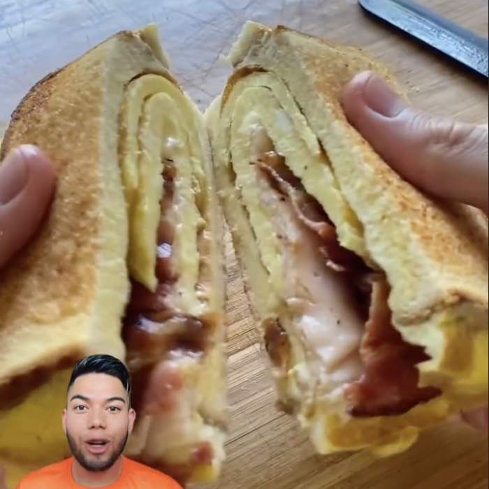

Sandwich de huevo
Ingredientes:
- 5 Huevos
- 2 Rebanadas pan de molde
- 2 tiras de tocino
- 1 Lámina de Queso
- 1 Rebanada de Jamón
Instrucciones:
- Revolver 3 huevos con pizca de sal
- Añadir los huevos a la sartén
- Encima del huevo, añadir dos rebanadas de pan, y cuando este listo de un lado voltear
- En otro sartén, cocinar dos tiras de tocino
- Juntar las esquinas de la hoja del huevo hasta que quede dentro del pan como wrap y encima poner
queso, jamón y tocino.
- Tapar sandwich y listo